Subtheme: Overdose Patterns in Allegheny County
Overall Analysis Questions
- How have yearly overdose deaths in Allegheny County changed over time, and what share involve fentanyl?
- Where are the geographic hotspots for fatal overdoses, and how often do incidents happen away from a person’s home ZIP code?
- Which demographic groups (age and race) have been most affected by fatal overdoses in recent years?
Discoveries & Insights
Incidents by Year
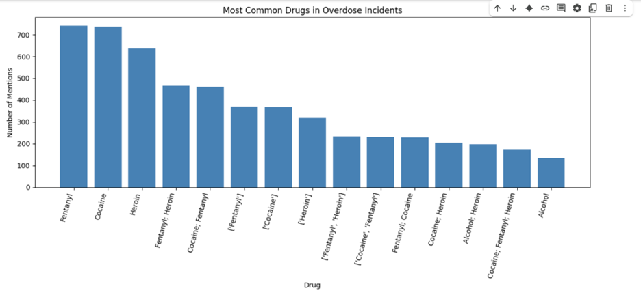Incidents by Calendar Month
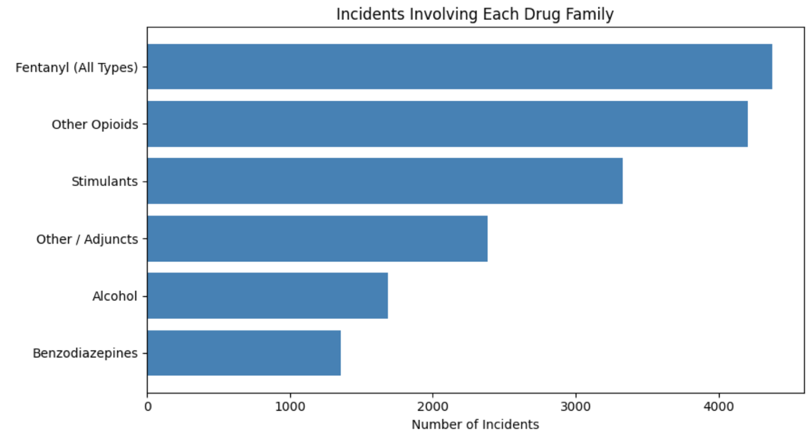Incidents by Day of Month
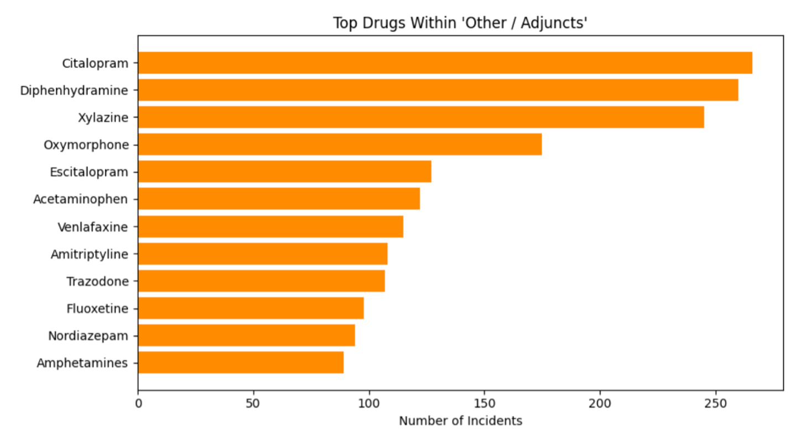Top-5 Most Prevalent Types by Month
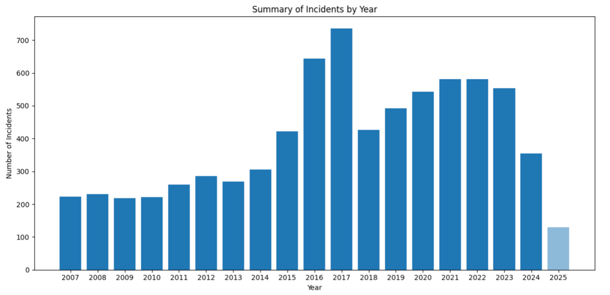Overdoses by Age Group and Year
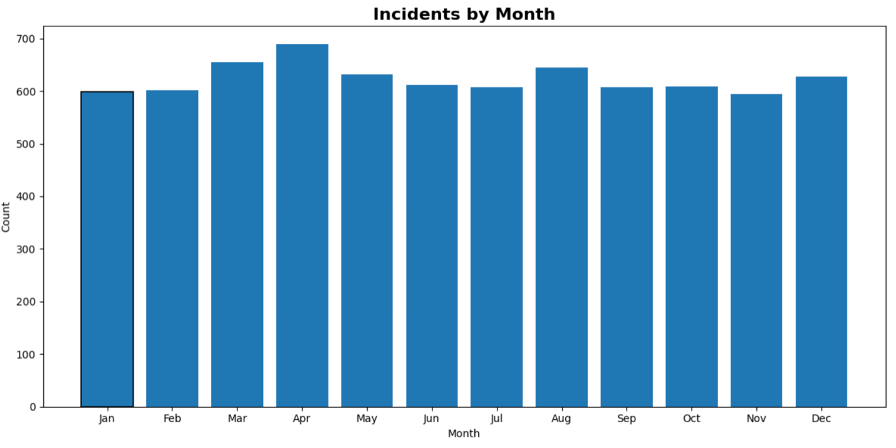Overdoses by Race Group and Year

Geographic Distribution: ZIP-Code Overview
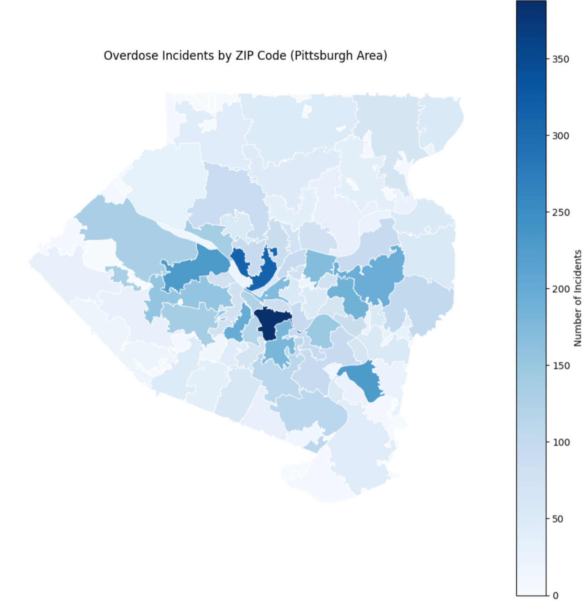ZIP-Level Disparity (Annotated)
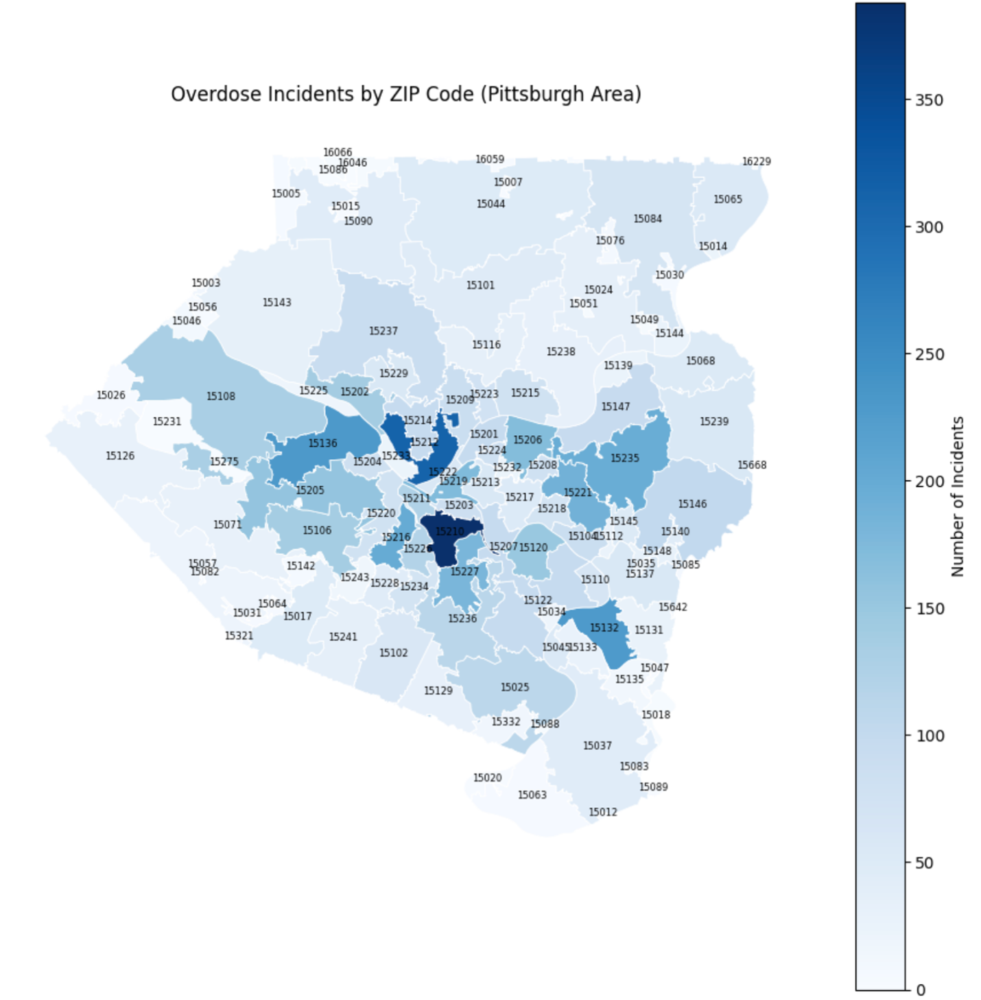Substance Presence: Fentanyl
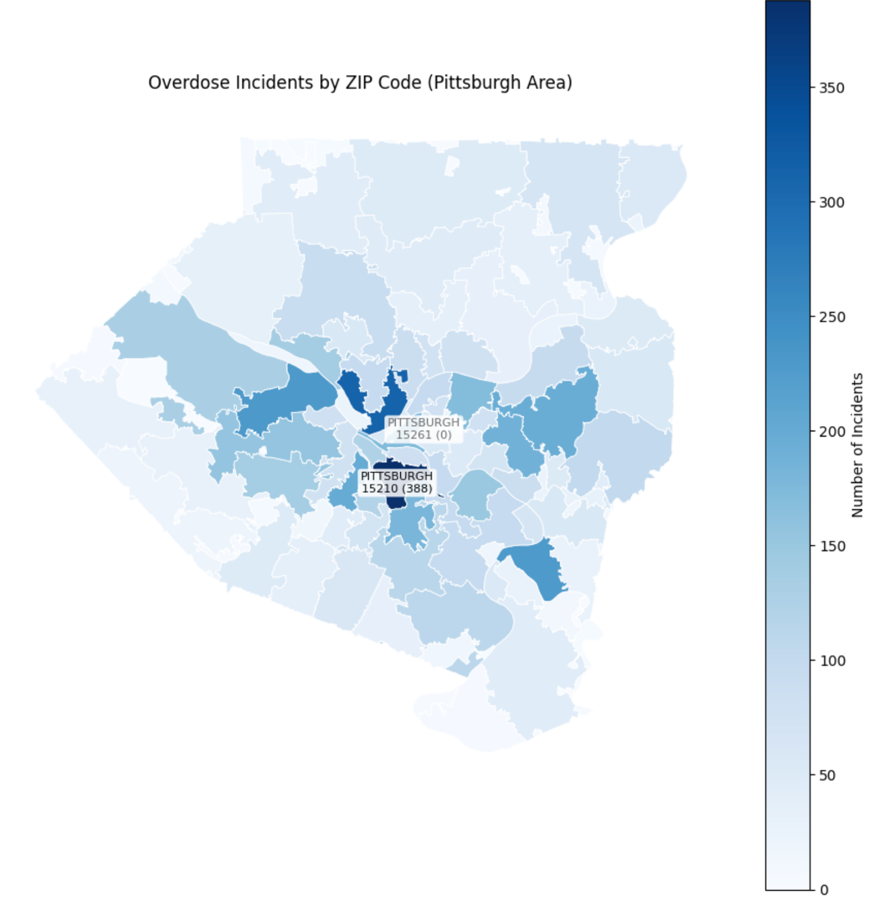Substance Presence: Opioids
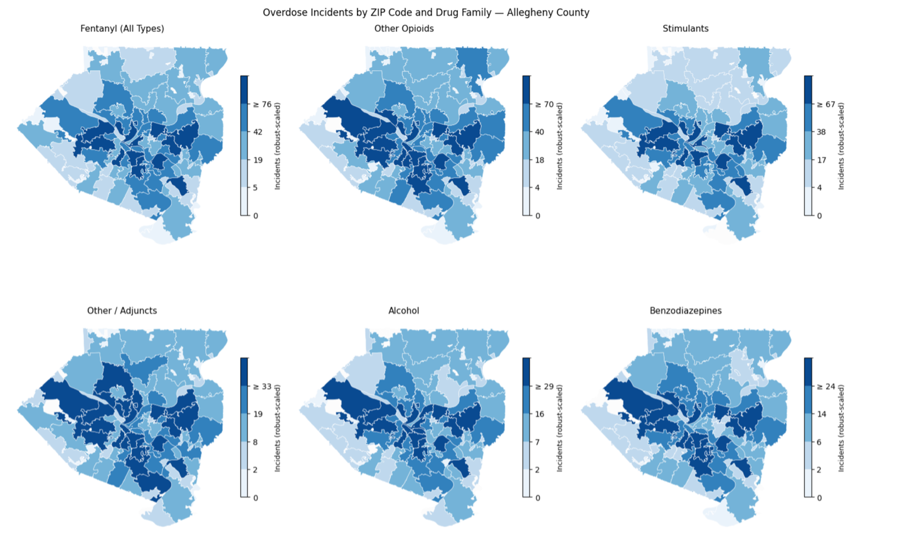Incidents by Age Bucket
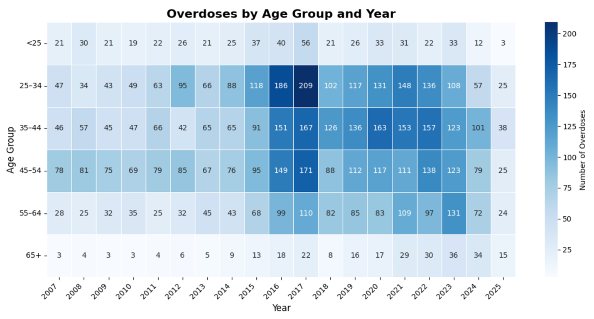Incidents by Home vs. Away ZIP
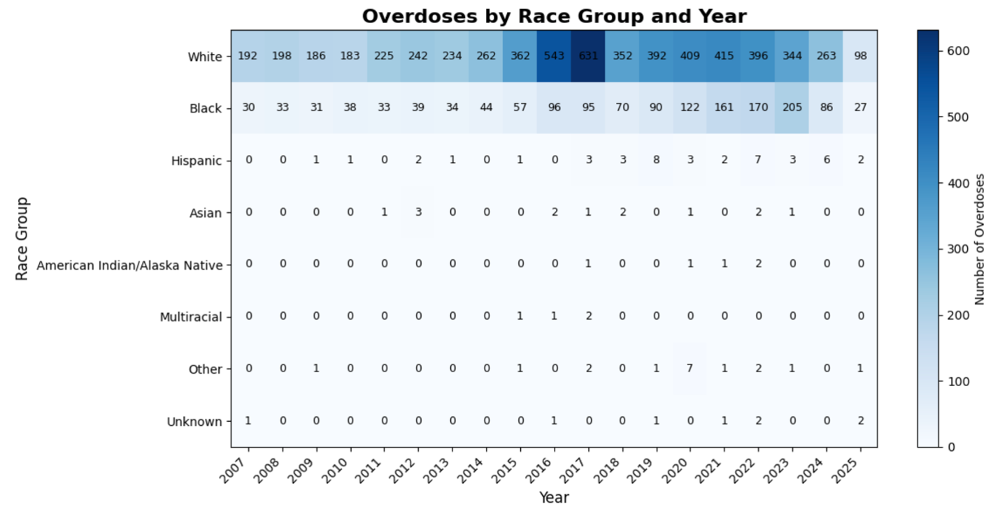Summary of Lessons Learned
Fatal overdoses in Allegheny County escalated dramatically in the mid-2010s, with fentanyl emerging as the dominant driver. Incidents are not evenly distributed geographically: central and river-adjacent ZIP codes carry the heaviest burdens. Demographically, working-age adults (25–44) are most affected, with men and White residents representing the largest share, alongside growing impacts in Black communities in recent years. Overall, the epidemic is concentrated and complex—across places, populations, and substances—suggesting targeted, community-specific interventions and continued data hygiene (e.g., reducing defaulted dates) will meaningfully improve analysis and response planning.